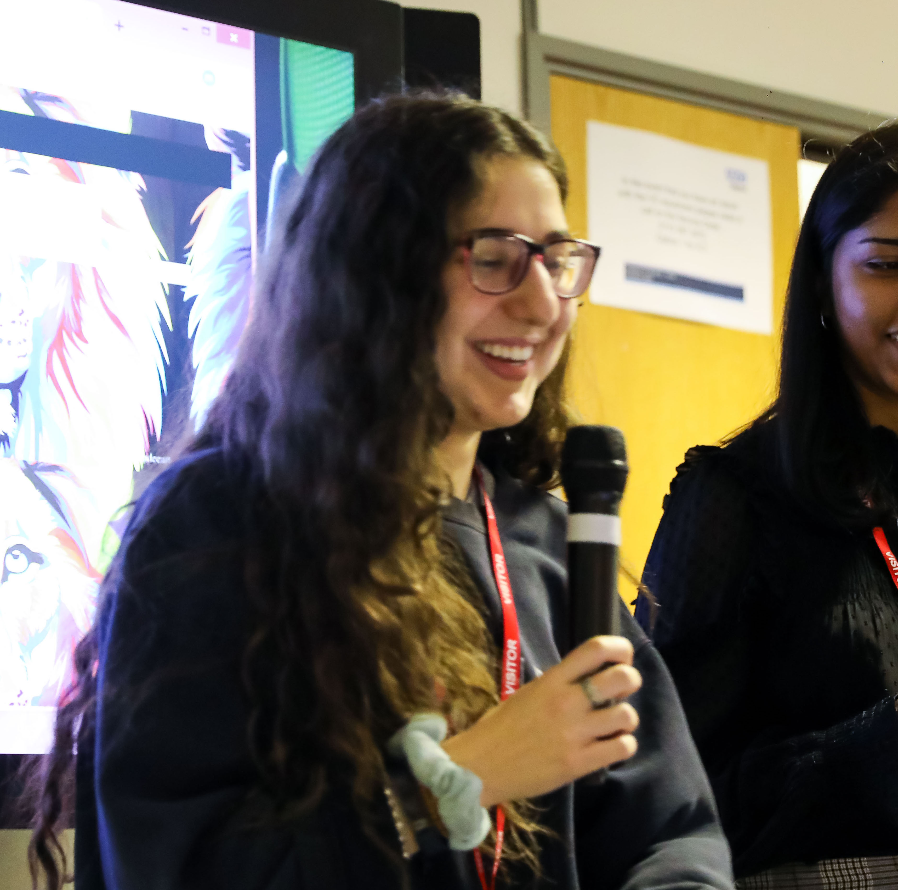

My name is Maya. I have created this website for my Computer Science module (COMP1021). It aims to encourage women to pursue Computer Science as a career path and help reduce the gender gap in computer science. This website was important to me to create, having been the only female in my A-Level Computer Science class, which as a result dettered me from continuing to pursue the subject at University, with the fear of again being one of the only females and having to study in an uncomfortable environment again. As a result, I am studying economics. However I have realised that we shouldn't be influenced by our surroundings, and should pursue what we enjoy. Lets get more females into Computer Science, and prove that Girls can code
